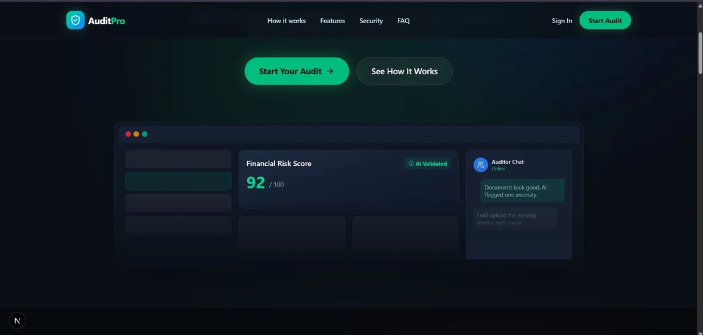

AUDIT DOCUMENTAIRE
AuditFlow
Plateforme d’audit de conformité qui compare les documents à un corpus de droit marocain grâce à un système RAG exécuté en local.
Contribution aux API REST, à la sécurité et à l’intégration du module de recherche documentaire.
Voir le dépôt